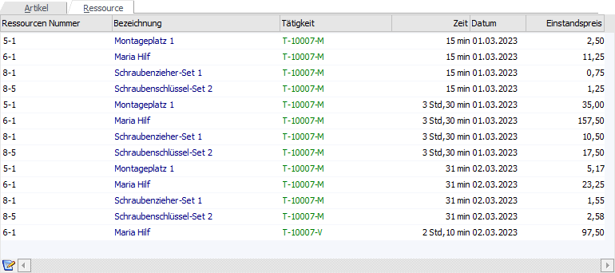
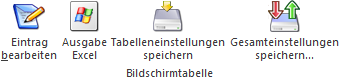

Im Register "Ressource" des Fensters Stückliste bearbeiten, welches nur bei Produktionsaufträgen aktiv ist, werden die Ressourcen des Auftrags aufgeführt.

Innerhalb der Ressourcentabelle werden die für den Produktionsauftrag benötigten Ressourcen angezeigt.
Achtung
Erst nach der Einplanung der Tätigkeiten werden in dieser Tabelle die benötigten und reservierten Ressourcen angezeigt.
Hinweis
Eine Änderung der Einplanung kann nicht in dieser Tabelle vorgenommen werden! Dieses geschieht über das separate Programm Kalendereintrag bearbeiten, welches per Doppelklick auf eine bestimme Ressourcenzeile oder mit Hilfe des Tabellenbuttons "Eintrag bearbeiten" aufgerufen wird.
Ø Ressourcen Nummer
In dieser Spalte wird die Ressourcennummer der Ressource ausgewiesen.
Ø Bezeichnung
An dieser Stelle wird die Bezeichnung der Ressource angezeigt.
Ø Tätigkeit
An dieser Stelle wird die Tätigkeit, aus welcher die Ressource stammt, angezeigt.
Ø Zeit
In dieser Spalte wird angezeigt, wie lange diese Ressource für den Auftrag, während der in der Spalte "Tätigkeit" aufgeführten Tätigkeit, reserviert wurde.
Ø Datum
An dieser Stelle wird das Reservierungsdatum ausgewiesen.
Ø Einstandspreis
In dieser Spalte werden die Kosten der Ressource dargestellt. Diese ergeben sich aufgrund des eingetragenen Stundensatzes im Ressourcenstamm ("Zeit" in Stunden x Stundensatz).
Tabellenbuttons

Ø Eintrag bearbeiten
Durch Drücken dieses Buttons oder mit einem Doppelklick auf die entsprechende Ressource wird das Fenster Kalendereintrag bearbeiten geöffnet. In diesem kann die Ressource auf einen anderen Termin verschoben werden.
Ø Ausgabe Excel
Durch Anwahl des Buttons "Ausgabe Excel" wird der Inhalt der Tabelle an Microsoft Excel übergeben.
Ø Tabelleneinstellungen speichern
Die Spalten einer Tabelle können grundsätzlich an beliebige Positionen verschoben, bzw. in der Breite entsprechend angepasst werden. Durch Anwahl des Buttons "Tabelleneinstellungen speichern" werden die Einstellungen benutzerspezifisch gespeichert und bei dem nächsten Aufruf des Programmpunktes wieder vorgeschlagen.
Ø Gesamteinstellungen speichern…
Im Gegensatz zu "Tabelleneinstellungen speichern" können mit "Gesamteinstellungen speichern" mehrere Tabellenaufbauten gespeichert und nach Wunsch geladen werden. Zusätzlich werden Sonderfunktionen der Tabelle (z.B. "Spalte gruppieren") ebenfalls bei der Speicherung bedacht.